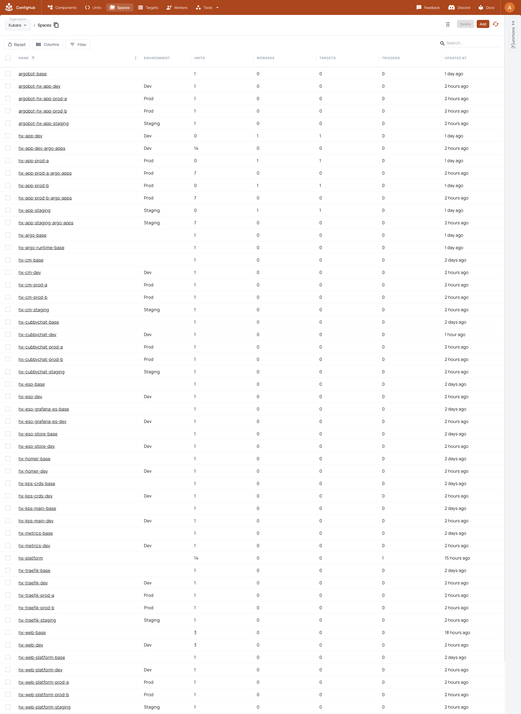

Your goal
The successful checkpoint is not “objects appear in the GUI.” It is an exact apply receipt followed by a second zero-action run. For the complete example, that receipt must be followed by a separate cluster-convergence check and a scoped residue audit.
What stays Kubara
- Kubara's selected components, versions, per-cluster specializations, generated namespaces, and dependency order remain the desired platform.
- Kubara's hub/ApplicationSet/AppProject topology remains available as the separately proved faithful lane.
- Argo CD remains the cluster reconciler in the ConfigHub-adapted lane; each cluster keeps a small local reconciler that applies the exact digest authorized by ConfigHub.
- Git remains the exact source hand-off and the OCI members remain the immutable delivery form.
What ConfigHub adds
- A component-first view over retained definitions and exact versions.
- Separate definition and target-instance Spaces rather than one flattened platform object.
- Immutable releases and exact
UpgradeUnitlineage. - Curated native
NeedsProvidesLinks for operational wiring. - Explicit source, approval, release, OCI digest, and destination-binding history.
- Idempotent convergence and an exact inventory policy that can refuse unexpected objects instead of silently adopting or deleting them.
The operating boundary is:
Kubara source and catalogs
|
v
exact Git revision -> immutable OCI members + platform index
|
v
ConfigHub governance plane
|
+--> local Argo reconciler -> development
+--> local Argo reconciler -> staging
+--> local Argo reconciler -> production A
+--> local Argo reconciler -> production BBefore you start
Require all of the following:
- the exact portable request from Step 4;
- the same clean detached Git checkout;
- the separate portable output and passing
oci-publication-receipt.json; - a reviewed copy of
request.example.yamlwith the intended organization name, context, stable slugs, external infrastructure, and workload-preservation declarations; - the exact external credential-scan report used by the portable request;
- one secret-free Argo runtime observation for every Kubara cluster;
- an authenticated
cubversion 0.2.11 or later; - an explicitly selected ConfigHub organization and exact context;
- one existing Target and one healthy cluster-local Argo delivery runtime for every Kubara target; and
- exclusive serialization against other writers to importer-managed Spaces, Units, Links, delivery Applications, and request-pinned workload heads.
The importer does not create or guess an organization, Target, or cluster-local delivery runtime. For a deliberately disposable new cluster, an operator can bootstrap those prerequisites with cub cluster up; do not rerun bootstrap blindly against an existing or production cluster.
The commands below define the reusable selected-organization path, but that path has not yet passed a complete clean-checkout acceptance run in a fresh user-selected organization. The passing live proof in this repository is the retained four-cluster Kubara organization. Treat destination bootstrap, portable package creation, binding, materialization, and application delivery in a fresh organization as one still-required graduation test, not as evidence that can be assembled from separate runs.
Check the selected identity before any write:
New to cub? Install the cub CLI first. Public catalog packages pull and render anonymously, and you sign in only once a command saves or changes ConfigHub data.
cub auth switch "Acme Kubara"
cub --context acme-kubara context get
cub --context acme-kubara versioncub auth switch selects an existing organization; it does not authorize the importer to invent or create one. Compare the displayed organization name, external organization ID, server URL, and context to the destination you intend to inspect. The importer later records the internal organization entity and rechecks every coordinate before mutation.
5.1 Compile the resumable selected-organization command contract
Start from selected-org-workflow.example.yaml. Set its absolute portable, checkout, destination, evidence, application, and acceptance paths, then compile it before executing any live step:
node scripts/compile-kubara-selected-org-workflow.mjs --compile \
--request /controlled/import/selected-org-workflow.yaml \
--output /controlled/import/workflow
node scripts/compile-kubara-selected-org-workflow.mjs --verify \
--request /controlled/import/selected-org-workflow.yaml \
--output /controlled/import/workflowThe compiler does not run a command or claim a live import. It writes shell-free executable/argument arrays to workflow-plan.json and a durable operation-journal.json. That plan preserves the exact order: portable compile/verify/package, explicit organization selection, existing-prerequisite observation or cub cluster up, destination inspection, binding, destination-bound verification, two identical applies, application release, then live acceptance.
After a journal step advances, validate the unchanged command contract and structurally exact completed prefix with --verify-journal; do not rerun --compile or pristine --verify over an advanced journal:
node scripts/compile-kubara-selected-org-workflow.mjs --verify-journal \
--request /controlled/import/selected-org-workflow.yaml \
--output /controlled/import/workflowAn interrupted cub cluster up is treated as in flight. Inspect its exact evidence before any replay. The command contract makes recovery explicit; it does not silently broaden authorization. The current journal verifier checks the command structure and prefix rules, opens each completed step's exact regular evidence file, and requires its bytes to match the recorded SHA-256. It does not decide whether those bytes semantically prove the step's live claim. Each evidence format still requires its own source-current verifier.
5.2 Select or bootstrap the declared prerequisites
The importer never creates an organization, Target, or ConfigHub-managed local Argo bootstrap. Select or create the organization through the normal ConfigHub workflow, switch to it explicitly, and observe each existing prerequisite. For a deliberately disposable cluster that is not already bootstrapped, the reviewed operation may use:
cub --context acme-kubara cluster up \
--name hx-app-dev \
--space acme-target-devRepeat only for the clusters explicitly declared with mode: cub-cluster-up in the workflow request. Do not rerun this command blindly against an existing or production cluster. Before continuing, every Kubara cluster needs one target Space and OCI Target, one <cluster>-argo-apps Space with root and its argobot Application, argobot-base/argobot, and one argobot-<cluster>/argobot instance with exact UpgradeUnit lineage.
For every target, retain a secret-free KubaraArgoRuntimeObservation outside Git and OCI. It must name the cluster, observed Argo component version and image, external evidence reference, and a passing status. The importer hashes that file; it does not connect to the cluster or infer the runtime from Kubara's faithful chart.
5.3 Inspect and authorize the exact destination
Run the read-only destination inspection with exactly one runtime observation for every request target:
node scripts/import-kubara-git-revision.mjs --inspect-destination \
--request /controlled/import/destination-template.yaml \
--context acme-kubara \
--credential-scan-report /controlled/evidence/gitleaks-report.json \
--runtime-evidence hx-app-dev=/controlled/evidence/dev-runtime.yaml \
--runtime-evidence hx-app-staging=/controlled/evidence/staging-runtime.yaml \
--runtime-evidence hx-app-prod-a=/controlled/evidence/prod-a-runtime.yaml \
--runtime-evidence hx-app-prod-b=/controlled/evidence/prod-b-runtime.yaml \
--output /controlled/import/reviewed-destination.yamlInspection makes narrow ConfigHub reads and writes no ConfigHub or cluster state. Review the resulting organization display name, external and internal IDs, server URL, context, the explicit untagged destination.spaceReleaseOCIBase, every Space/Target/bootstrap identity, external Argo runtime observation, and every workload Application head that must be preserved. Never hand-edit observed UUIDs or hashes around a refusal.
The Space-release OCI base is destination authority. Inspection does not infer it from the HTTPS server URL, and the importer has no hard-coded production registry fallback. A different base changes BindingDigest and every generated Argo repository URL while leaving the target-neutral PlatformDigest and portable component/config payloads unchanged.
5.4 Bind the portable set to that destination
Keep the bound output separate from Step 4's portable directory:
node scripts/import-kubara-git-revision.mjs --bind \
--request /controlled/import/reviewed-destination.yaml \
--checkout /absolute/path/to/clean-detached-checkout \
--portable /controlled/import/portable \
--output /controlled/import/bound
node scripts/import-kubara-git-revision.mjs --verify \
--request /controlled/import/reviewed-destination.yaml \
--checkout /absolute/path/to/clean-detached-checkout \
--output /controlled/import/boundBinding recompiles the target-neutral result from the exact Git bytes and requires equality with the published portable package set. It does not republish OCI. It writes destination-binding-lock.yaml, import-plan.json, target-facts-required.yaml, acceptance.json, checksums.txt, and portable-binding-receipt.json, then copies the exact local OCI tree and passing publication receipt. It reuses an identical prior bound copy and refuses a conflicting existing file or tree. Require the same PlatformDigest as Step 4 and a destination-specific BindingDigest marked outside OCI.
5.5 Review the exact plan and complete target-fact attestation
Read, do not infer, the ordered plan produced by binding:
/controlled/import/bound/import-plan.jsonConfirm that it contains only the intended:
- component definitions and versions;
- per-target effective component/config instances;
- faithful and adapted delivery definitions;
- cluster and environment Spaces;
- delivery Applications and four apps-root releases;
UpgradeUnitlineage; and- curated
NeedsProvidesLinks.
Anything that must remain outside importer ownership must be named by the request under spec.externalInfrastructure. Existing workload Applications that must survive the import must be pinned under delivery.workloadApplications; rerun --inspect-destination and --bind if those declarations change. That changes the BindingDigest, not the portable PlatformDigest or OCI payloads.
Copy /controlled/import/bound/target-facts-required.yaml to controlled storage outside Git and OCI. For every binding, set its status to verified-present. For every required resolution, set status to either satisfied or not-applicable-reviewed, add a secret-free external evidenceRef and exact sha256: digest, and require:
policy:
secretValuesIncluded: false
generatedTemplateIsAnAttestation: trueThe generated file is only a template until an operator completes it. Apply refuses pending facts, a different binding digest, missing evidence hashes, or secret values.
5.6 Apply the exact revision once
Run the importer with the same paths and the completed attestation:
node scripts/import-kubara-git-revision.mjs --apply \
--request /controlled/import/reviewed-destination.yaml \
--checkout /absolute/path/to/clean-detached-checkout \
--output /controlled/import/bound \
--context acme-kubara \
--target-facts /controlled/evidence/target-facts-attested.yaml \
--receipt-output /controlled/import/bound/evidence/apply-first-receipt.jsonThe deterministic order is bootstrap and target pins, argobot source releases, definitions and control Units, variants and instances, platform delivery Applications, apps-root releases, exact Links, and finally source Space releases.
After a state-changing first run, the expected result is:
status.result: pending-second-zero-action-run
status.lastActionCount: <a positive integer>
status.secondRunZeroActions: falseThe canonical current receipt is written to /controlled/import/bound/apply-receipt.json. The selected-organization workflow also preserves this first step independently at:
/controlled/import/bound/evidence/apply-first-receipt.jsonThat first receipt records a converged attempt, not accepted idempotence.
5.7 Apply the identical inputs immediately again
Without editing the request, checkout, package output, attestation, context, or live objects, repeat the exact command:
node scripts/import-kubara-git-revision.mjs --apply \
--request /controlled/import/reviewed-destination.yaml \
--checkout /absolute/path/to/clean-detached-checkout \
--output /controlled/import/bound \
--context acme-kubara \
--target-facts /controlled/evidence/target-facts-attested.yaml \
--receipt-output /controlled/import/bound/evidence/apply-immediate-noop-receipt.jsonThe accepted second result is exactly:
status.result: pass
status.lastActionCount: 0
status.secondRunZeroActions: true
status.localReceiptCryptographicProof: falseThe last field is intentional. The local receipt is a deterministic continuity record, not a server-signed or cryptographically tamper-proof attestation.
5.8 Verify cluster convergence separately
The importer receipt deliberately records clusterConvergenceClaim: false. ConfigHub release publication is not cluster health. For every platform Application, independently retain observations proving:
- the Argo Application is at the exact source-release manifest digest named in the receipt;
- sync state is
Synced; - health is
Healthy; and - required Kubernetes workloads have converged.
An Application that is Synced to an older digest is not accepted. A workload that runs while Argo remains permanently Progressing is reported as a watch or failure according to its contract, never silently upgraded to a pass.
The adapted lane also proves a stricter deployment-authority boundary than an ordinary auto-sync configuration:
spec.source.targetRevision: latestremains on every managed Application only as the ConfigHub OCI discovery address. It is not permission to deploy whatever release happens to become latest.spec.syncPolicy.automatedis absent from every managed Application, including each self-managing delivery root. A publication or refresh cannot therefore bypass ConfigHub review, approval, or release selection.argobotis pinned to v0.1.6 with literalARGO_SYNC_MODE=kubernetes,ARGO_NAMESPACE=argocd, andARGO_REFRESH_TYPE=hard. In that mode it requests a hard refresh only; it never submits a sync operation.- Immediately before deployment, the reconciler revalidates the exact authoritative ConfigHub release and its Unit heads. It waits until no active Argo operation exists, then submits
operation.sync.revision=<ManifestDigest>with Kubernetesmetadata.uidandmetadata.resourceVersioncompare-and-set tests. A changed Application identity, concurrent write, or changed release is reread and refused rather than silently overwritten. - Application inventory is cluster-wide, not limited to the
argocdnamespace. Any Application outsideargocd, any undeclared Application, or any ApplicationSet that could regenerate a managed Application fails the authority and orphan gates.
This is a deliberate, visibly better departure from an automated mutable-tag lane: ConfigHub owns release authority, while the small cluster-local Argo instance still performs reconciliation and reports sync and health. The claim controls the importer-managed automated path. It does not prove that a privileged human cannot issue a manual Argo sync; that stronger claim requires separate Argo RBAC or admission-policy evidence.
Retained release-N Tags prove the additive release-history identity and are audited for a complete sequence through each current Release. They are not the deployment authority: ConfigHub's exact OCI ManifestDigest is. In the current server API, publish has no caller-supplied expected-head transaction, so an external writer can still cause a Release that the client's closing check rejects. The no-auto root and refresh-only argobot prevent that rejected Release from deploying through this managed reconciler; preventing the Release record itself requires server-side publish preconditions. This is a product boundary, not a reason to weaken the client checks.
The current retained fleet also proves the one-time upgrade path for immutable Kubernetes selectors. Sixteen exact resources are allowlisted: four hx-web Deployments and Cubbychat's backend Deployment, frontend Deployment, and PostgreSQL StatefulSet on each of four targets. Each replacement is a durable prepared -> delete-returned -> old-uid-gone -> replacement-healthy journal transition, bound to the exact Application, OCI revision, old UID and resourceVersion, reviewed old/new selectors, ConfigHub origin, Argo tracking identity, replacement readiness, and ready endpoints. The four PostgreSQL records additionally bind the same Bound PVC UID and volume name before and after StatefulSet replacement. The policy authorizes no general workload delete operation.
5.9 Run the complete example's exact inventory audit
The reusable importer above defines the organization chosen by the user as its destination, but the fresh-organization end-to-end acceptance is still a graduation gate. This repository also has a stricter, canned four-cluster mini-IDP reconciler for the ConfigHub Kubara example organization. It is not a generic command for another adopter's organization.
For maintainers refreshing that exact example, the serial sequence is:
npm run kubara-mini-idp:plan
npm run kubara-mini-idp:apply
npm run kubara-mini-idp:apply
npm run kubara-mini-idp:verify
npm run kubara-mini-idp:receipt-verify
npm run kubara-mini-idp:orphan-plan
npm run kubara-mini-idp:orphan-audit:self-test
npm run kubara-mini-idp:orphan-audit
npm run kubara-mini-idp:orphan-audit:receipt-verifyRun only one live lane at a time. Never delete the persistent example clusters hx-app-dev, hx-app-staging, hx-app-prod-a, or hx-app-prod-b as cleanup for this workflow.
The expected current plan contains 55 Spaces, 63 managed Units, 27 deployments, and 25 curated NeedsProvides Links. The orphan allowlist covers 105 total retained and managed Units, 64 UpgradeUnit/NeedsProvides Links, four Targets, and 35 Argo Applications. These numbers belong to this exact example, not the generic importer contract.
For those 35 Applications, the combined reconciliation and audit evidence must also retain the authority facts above: latest is discovery-only, spec.syncPolicy.automated is absent, the observed revision is the exact authoritative ConfigHub ManifestDigest, and the pinned refresh-only argobot runtime cannot deploy. A tidy inventory with an automated mutable-tag path is not an accepted result.
Expected ConfigHub state
For a generic import, the exact expected inventory is the reviewed import-plan.json, not a fixed global count. The organization should expose:
- reusable component definitions before their deployable variants and target-specific configurations;
- exact versions and OCI manifest/layer digests;
- definition, instance, delivery, application, wiring, target, and platform control roles;
- explicit target and environment labels;
- faithful and adapted lane identities that are not conflated;
- target-bound component/config instances;
- exact releases and lineage; and
- only the curated native Links declared by the plan.
For the canned example, the passing live files must be:
runs/kubara-mini-idp-reconcile/receipt.yaml
runs/kubara-mini-idp-reconcile/orphan-audit.yamlThe source-current mini-IDP receipt now reports pass; it records 55 Spaces, 105 total Units, 64 Links, four Targets, 35 exact-digest healthy Argo Applications, the complete app-governance scenario, 16 completed selector replacements, and an immediate zero-action run. That no-op recorded zero ConfigHub mutation attempts, zero Argo sync requests, 33 ConfigHub CLI read commands, 208 total subprocess calls, and about 77 seconds end to end. The fixture regression target is met. CLI commands are not authenticated HTTP round trips, and this fixture evidence is neither a raw-Kubara comparison nor a service-level promise.
The exact-inventory claim remains separately bound to orphan-audit.yaml. Never infer it from the passing reconciliation receipt. A passing audit proves zero unexpected ConfigHub objects, zero Argo-prunable resources, zero unclassified or dangling Deployments/StatefulSets/DaemonSets/CronJobs/Jobs, UID-current controller ownership, and no stale ownership on four protected Namespaces. It does not inventory every Kubernetes resource type and therefore does not claim that an entire cluster is orphan-free.
Historical organization-shape evidence remains useful lineage; it is not a substitute for this checkpoint.
Machine checkpoint
Exercise the portable importer, selected-organization command journal, and application release compiler together without touching a live organization, registry, or cluster:
npm run kubara-adoption:self-testPassing this command proves the deterministic contracts and refusal cases. It does not make operator-supplied evidence semantically true and is not a fresh-organization acceptance receipt.
For a real adopter import, retain /controlled/import/bound/apply-receipt.json plus the distinct immutable apply-first-receipt.json and apply-immediate-noop-receipt.json snapshots, and require the exact passing second-run fields above. Reusing one mutable evidence path for both workflow steps is refused. Then retain the separate Argo/Kubernetes observations.
For the canned example, the machine gate is:
npm run kubara-mini-idp:receipt-verify
npm run kubara-mini-idp:orphan-audit:receipt-verifyBoth commands must pass. A missing receipt is a failed checkpoint, not a reason to relabel generated desired state as live evidence.
Screenshot to capture after the checkpoint passes
Do not publish a current screenshot until the apply, convergence, and orphan receipts all pass for the same source revision and the GUI tour's pre-capture gate passes without requiring an image. This chapter owns exactly one future adoption frame, separate from the ConfigHub GUI tour.

Then capture the selected organization with the hx-platform/platform-contract Unit open. The frame should show the source Git identity, Kubara version, organization identity, four target relationships, and navigation to the component Catalog, faithful/adapted lanes, matrix, and wiring. Capture a second pane in the same real browser frame with the faithful and adapted delivery definitions side by side, so a Kubara user can recognize the original hub/spoke topology and the simplified ConfigHub-governed topology. Do not splice observations from different organizations or source revisions.
The caption must identify the source commit, organization, accepted receipt, and capture date. It proves governed materialization and visible topology; it does not by itself prove cluster workload health. Embed it at the declared path only when the six-frame adoption receipt binds the exact source commit and Git trees, faithful, mini-IDP, and orphan receipts, image digest, UTC capture time, visible identities, sensitive-value handling, caption, and claim boundary. Until then, leave the hook unexpanded.
Troubleshooting
| Symptom | What it means | Safe response |
|---|---|---|
| Apply refuses the context, server, organization, Space, or Target | Live destination identity changed after inspection. | Stop. Rerun read-only destination inspection, review the new request, and rebuild the binding. Do not edit IDs around the refusal. |
| Target-fact attestation remains pending or has no evidence hash | The destination prerequisites were not operator-verified. | Complete the external secret-free attestation; never place secret values in it. |
First apply reports pending-second-zero-action-run | The expected acceptance run has not happened yet. | Repeat the identical apply immediately. Do not call the import complete. |
| Second apply performs actions | Inputs or live state changed, or the first run did not converge exactly. | Preserve both receipts and investigate the named actions. Any mutation resets the two-run proof. |
| Apply stops partway through | A bounded interruption occurred. | Resume with exactly the same request, checkout, package, context, and attestation. Do not manually replay guessed mutations. |
Argo is Synced at the wrong digest | The cluster has not observed the ConfigHub release under test. | Let the reconciler revalidate and submit the exact ManifestDigest; do not enable automated sync or accept sync state alone. |
A managed Application has spec.syncPolicy.automated | Mutable latest has regained deployment authority and can bypass the governed release selection. | Stop publication and promotion, preserve the evidence, and restore the no-automation contract through the reconciler. Do not patch around it with a manual sync. |
| An unexpected Space, Unit, Link, or workload appears | The destination is not the reviewed inventory. | Classify it explicitly or remove it through its owning workflow. The importer and orphan auditor do not silently adopt or delete it. |
| The mini-IDP or residue-audit receipt command says a file is missing | That exact live boundary has not been proved for the current source. | Run only the missing ordered live sequence after its prerequisites pass. Do not infer reconciliation from desired state or infer exact inventory from reconciliation. |
Safe to stop
Destination inspection and binding are safe stopping points because they do not mutate ConfigHub or a cluster. If cub cluster up was started, however, its multi-system bootstrap may be partially complete: preserve its evidence and inspect the exact state before any replay. After an interrupted first import apply, keep all exact inputs and rerun the same command; the importer is designed for bounded additive recovery. Do not switch organization, alter the request, or start a second writer during that recovery.
After the first completed apply, it is safe to pause operationally, but the result remains pending-second-zero-action-run and is not accepted evidence. After the passing second run, retain the receipt before moving to cluster verification and Step 6.
The importer issues no delete operations. Generated Argo Applications can use pruning, so a later reviewed source release that removes Kubernetes objects may cause Argo to delete those objects after sync. Decommissioning ConfigHub objects is a separate explicitly authorized workflow.
Previous: Step 4 - publish immutable OCI